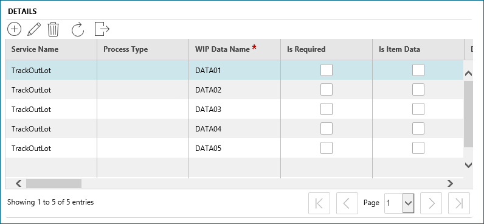

The ultimate goal of using SPC is to identify product that is non-conforming or trending toward non-conformity during the manufacturing process and to facilitate immediate response activities. The SPC Chart Type produced by Inline SPC is returned to Opcenter Execution Semiconductor and graphically displayed into conformance data. The charts are configurable to allow shop floor operators to make any annotations and overrides.
Control charts are one of the mechanisms offered by Inline SPC to help you monitor and control quality and throughput. The Inline SPC computational engine offers a variety of control charts that can be customized for your particular requirements.
The application creates a separate folder for each SPC Setup executed. For Inline SPC, the application saves to the following folder—C:\ProgramData\Camstar\InlineSPC\Chart Output.
This image shows an example WIP Data Setup with five WIP Data Names, each of which is associated with its own SPC Setup. For example, Data01 with SPC_SETUP1; Data02 with SPC_SETUP2, and so on.

| Note: | Actual folder names vary based on date executed and SPC Setup names. |